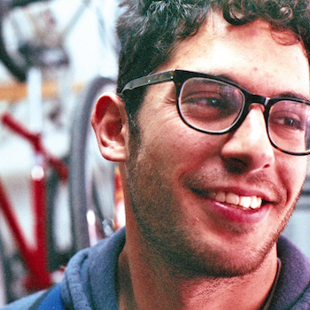

Hi, I'm Adam.
I'm a "web developer", "programmer", "technologist", or whatever else you'd like to call me. I've spent the majority of my professional career developing software for the public sector. No, not this kind. This kind.
I'm currently working as a freelance technology consultant. My strengths are in making technology choices, adopting best-practices across organizations, organizing, and providing mentorship to junior engineers.
I've worked at all levels of "the stack", and enjoy turning an idea from a concept, to wireframes, to an MVP, to a robust and scalable application.
If you're interested in working together, please [get in touch]().
